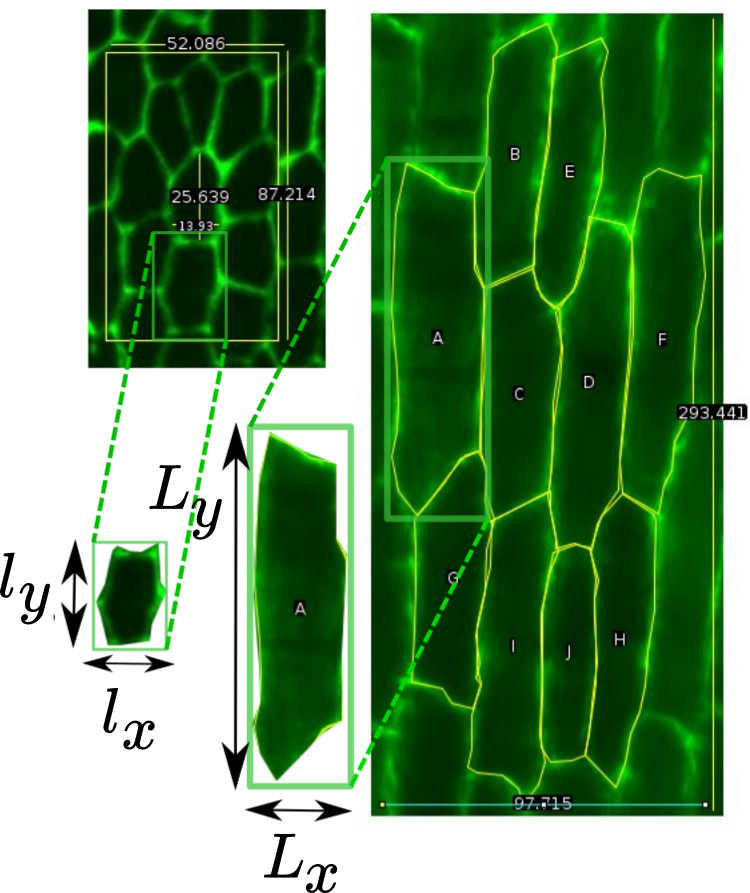
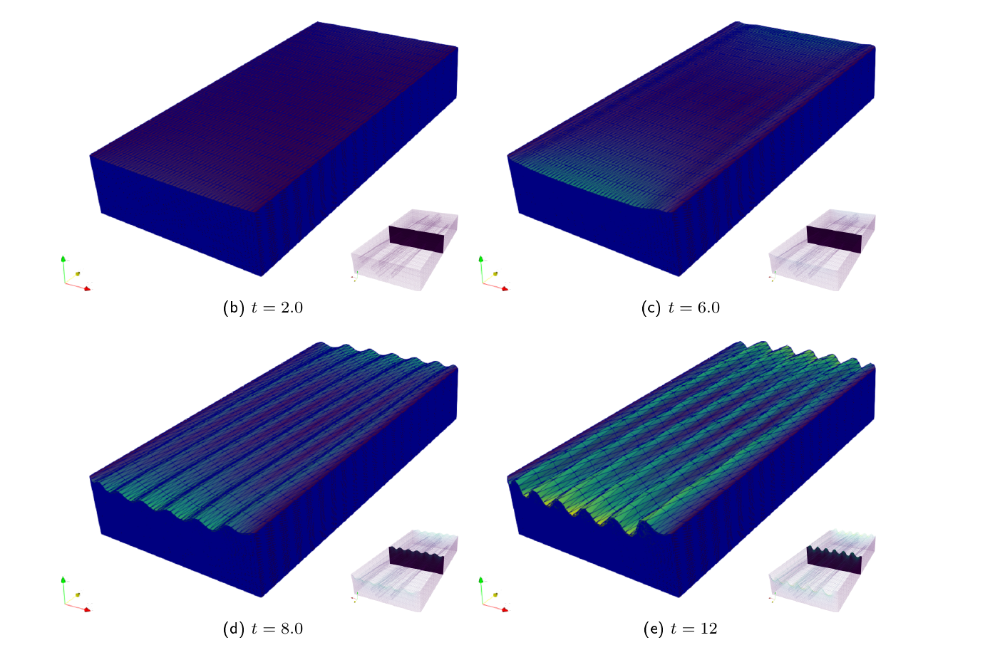

HFSP MEETING
Models of pattern formation during development.
Cambridge Team.
cal72@cam.ac.uk
The story so far



Models.

Growth Tensors-Quasistatic Model.
We use the control parameters $R$ and $h_o$ where:
$R=\frac{E_f}{E_s}$ and $h_o$ is the initial thickness of the cuticle.
Growth Models: $\mathbb{F}_{g}^{substrate}$ and $\mathbb{F}_{g}^{film}$ of the form:
\begin{pmatrix}g_{1}(t) & 0 & 0\\\ 0 & g_{2}(t) & 0\\\ 0& 0 & g_{3}(t) \end{pmatrix}
Where $g_{j}(t)$ obey some growth dynamical rule $\dot{g}_{j}=f_j(\mathbf{X},t)$.
Film growth and curvature.
Several Cells-Boundary Conditions
Curvature Results.

Curvature Results.
Curvature Results.
Hibiscus Data.
Volumetric Models.


Film growth.
Film and substrate growth and base stretching.
Take home.
Growth tensors:
Natural extension to spatial processes.
Determine the bifurcation thresholds.
Curvature 2d:
Delays the wrinkle formation.
Enforced by boundary conditions.
Volumetric case:
Base of domain stretching.
Stiffer cell wall or more than two domains.
ADDENDA
Spectra simulations